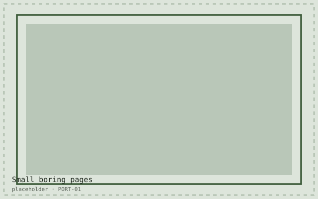

This site is one stylesheet, one script and a folder of SVGs. There is no build step. I edit a file, I look at it in a browser, and that is the entire development loop. It will still open in eleven years, which is more than I can say for anything I shipped professionally in 2015.
What small buys you
- A page you can read the source of. All of it, in one sitting.
- No dependency that can be abandoned, renamed, or acquired.
- Hosting that is a folder of files, so moving it is copying it.
- A loop fast enough that you try the stupid idea, because trying it costs nine seconds.
What it costs
Repetition, mostly. The header on this page is copied into every file, which means a navigation change is a find-and-replace across twenty-three of them. I have made peace with that, because the alternative — a template system, a build, a watcher, a lockfile — costs me the thing I like most, which is that the file I edit is the file the browser gets.
“The file I edit is the file the browser gets. Everything else is negotiable.”
At work I make the opposite choice daily and I am right to. A product with six teams needs the machinery. A personal site needs a folder. Confusing the two is how people end up with a lockfile for a résumé.
Related reading
- Focus rings aren’t ugly, they’re furnitureA focus indicator is not decoration you apologise for. It is the handrail on you…
- Twelve small tools I built instead of one large oneThe large tool was going to take a year. The twelve small ones took nine weekend…
- Teaching a classroom with toys instead of slidesThirty-one eleven-year-olds will find every edge case in your interface within n…